环境与系统
Linux Linux
Linux 严格指内核，日常也用来指使用它的一套操作系统。
放进例子里
Ubuntu 是使用 Linux 内核的发行版。
在本课里有什么用
先知道自己在学习哪种系统，再理解常用文件和程序操作。
容易混淆的地方
Linux 不是一种编程语言，终端也不是内核。
Linux 入门 · 连续阅读
本页展开所有章节。打印时自动显示练习解析；交互演示附有文字说明。术语可点击查询，禁用脚本时跳到页末附录。
第 01 节 · 从一个问题出发
为什么整理文件也值得学一种新方法？
分清 Linux、发行版和 Shell；知道这门课能解决什么。
假设你在一个小小的自然观察站记录鸟类。第一天只有一份笔记，鼠标点开就能看。过了一周，笔记、照片文件名、设备日志和表格放在一起。你想找到所有报警记录、数一数每种鸟出现了几条记录，再把结果交给同行的人。
这些事都可以从很小的操作开始。本课会陪你把它们逐步连起来：找到文件 → 看懂内容 → 提取线索 → 保存结果 → 重复执行。 观察站的数据是人为编写的练习材料，不是真实观测或科研结论。
图解 · 从窗口到系统
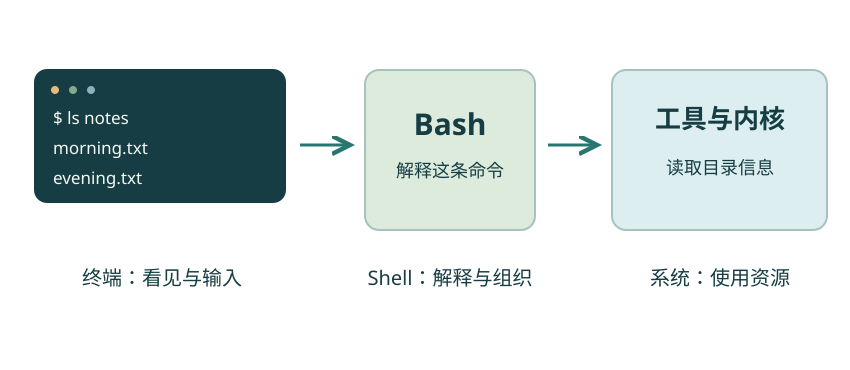
终端展示文字，Shell 解释命令，工具通过系统使用资源。箭头表示这次操作的层次，不是完整操作系统结构。
放大查看 ↗ 保存 SVG ↓Linux 严格说是内核：它帮助程序使用处理器、内存、磁盘等资源。我们日常说“用 Linux”，通常是在说一套使用 Linux 内核的操作系统。
发行版把内核和常用软件组织成可安装、可维护的系统。Ubuntu 就是一种发行版。你不需要先学会编译内核，也不需要同时研究各种发行版。
终端是我们输入文字、查看结果的窗口。Shell 是接收并解释命令的程序。本课使用的 Shell 叫 Bash。窗口、解释命令的程序和操作系统不是同一件东西。
把这一层关系想成“窗口 → 调度员 → 工具与系统”有助于入门。但 Shell 并不只是传话：它还负责解释引号、展开变量、连接输入输出。后面会慢慢认识这些动作。
Unix 的早期设计让多人可以通过终端使用一台计算机。文字命令和处理文本的小工具在这样的环境中发展起来。GNU 项目后来提供了很多自由软件工具；Linux 内核从 1991 年起发展。今天常见的 Linux 发行版把内核、GNU 工具和许多其他项目的软件组合起来。
这段历史留下了一种实用习惯：一个工具先做好一件事，再把工具连起来。面对很多文件时，明确写下操作也方便再次执行与核对。图形界面和命令行各有用途，你可以同时使用它们。
起点只要求会打开文件夹、输入文字。终点是一份自己能够解释的小简报：哪些文件参与了统计，哪里出现过报警，各类记录有多少条。
Linux 是操作系统相关的学习主题；后半程出现的脚本使用 Bash 语法。课程不要求你先掌握其他编程语言，也不需要另一门课程的知识。
动手试试
你想打开一个窗口，输入命令，让电脑列出文件。这个过程中，终端、Shell、内核各负责哪一层？
从“你看见的界面”和“解释命令的程序”开始区分。
终端呈现文字输入输出，Shell 解释命令并调用工具；工具通过操作系统提供的能力完成文件操作。内核不是终端里的一条命令。
下一节先准备一个可以练习的地方。暂时不用背名字；当你真正打开终端时，再回来看这张关系图。
检查一下理解
Linux 严格说指内核；日常所说的 Linux 系统通常还包含工具、Shell 和其他软件。
第 02 节 · 从一个问题出发
怎样得到一个可以放心练习的环境？
准备 Ubuntu 或 WSL；复制练习材料；分清 Windows 与 Linux 的终端。
本课的命令使用 Ubuntu 24.04 LTS、Bash 和 GNU 常用工具作为基准。已经有 Ubuntu 的，可以直接练习；Windows 可以用 WSL；已有 Linux 服务器的，可以通过 SSH 登录。网页和术语阅读本身不要求安装这些软件。
| 现在的情况 | 从哪里开始 |
|---|---|
| 已经在 Ubuntu 中 | 打开“终端”应用 |
| Windows，尚无 Linux 环境 | 按下面的 WSL 路线准备 |
| 已有服务器账号 | 看资料页的“SSH 与文件传输”，登录后使用自己的家目录 |
| macOS，或暂时不能安装 | 先阅读和操作网页图解；实操使用 Ubuntu 虚拟机或已有服务器 |
macOS 的终端并不等于 Ubuntu，其默认 Shell 和部分命令选项也不同。本课暂不把 macOS 原生命令环境当作验证基准。
以下这一条是 Windows 终端／PowerShell 的安装命令，需要按系统提示使用管理员权限，并可能需要重新启动。先保存手头的工作。
wsl --install -d Ubuntu-24.04如果这台电脑已经安装过 WSL，先用 wsl --list --verbose 查看已有发行版；有可用 Ubuntu 就不必重复安装。安装遇到系统版本或虚拟化提示时，按微软 WSL 官方说明处理。
打开 Ubuntu 后，按提示创建你自己的 Linux 用户名和密码。输入密码时屏幕可能不显示字符，这不代表键盘失灵。后续课程中的 Bash 命令都在 Ubuntu 终端运行。
下载资料页中的 练习材料 ZIP，解压后得到 linux-lab 文件夹。请保留原始下载作为备用，并将一个练习副本放进 Linux 的家目录。
\\wsl.localhost\Ubuntu-24.04\home，打开自己的 Linux 用户目录，再复制文件夹。发行版名应与实际安装名称相同。图解 · 一棵目录树，一枚位置图钉
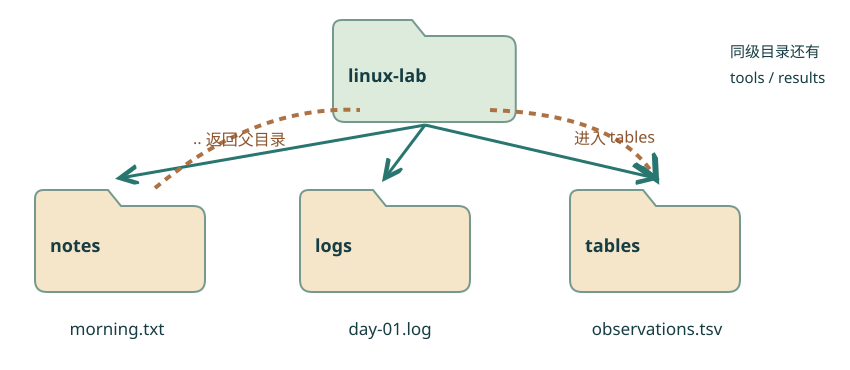
linux-lab 是练习根目录。notes、logs、tables、tools 和 results 都在它下面；箭头标出从 notes 经父目录进入 tables 的路线。
放大查看 ↗ 保存 SVG ↓notes 放文字笔记，logs 放日志，tables 放表格，tools 放一个小示例程序，results 用来接住后面产生的结果。这些只是便于理解的目录名称，Linux 并不强制你这样命名。
如果想重做练习，先通过文件管理器把当前工作目录改名保留，再从 ZIP 解出一个新副本。这样既能回看自己做过什么，也不用用一条大范围删除命令清空文件。
每节的示例都说明起始位置；随包材料足够支撑任意一节独立重做。网页里的“参考输出”只用于对照，自己的家目录名称、时间和部分排列顺序可能不同。
动手试试
在文件管理器中找到 linux-lab，打开 notes/morning.txt，确认能看到三行文字。现在你是否能说清：这个文件属于本机 Windows、WSL 内的 Ubuntu，还是远程服务器？
看文件管理器地址和当前连接的机器。
答案取决于选择的路线。关键是明确后续命令在哪台机器、哪个操作系统中运行，不能把 Windows 文件地址直接当成 Linux 路径。
检查一下理解
WSL 提供 Linux 环境。安装 WSL 的命令在 Windows 终端运行；课程的 Bash 命令在 Ubuntu 终端运行。
第 03 节 · 从一个问题出发
屏幕上的哪些字需要输入，哪些不用？
理解提示符、命令、参数和输出；使用帮助、补全和中断。
打开终端后，常见的一行文字像这样：
river@station:~$这是提示符的一种样式。river 可能是用户名，station 可能是机器名，~ 通常表示家目录，$ 常见于普通用户的提示符。样式可以自定义，因此不要仅凭颜色或一个符号判断权限。
输入命令时，不要把教程里的提示符一起输入。 本教材可复制的命令块都不包含提示符。
图解 · 把一条命令拆开看
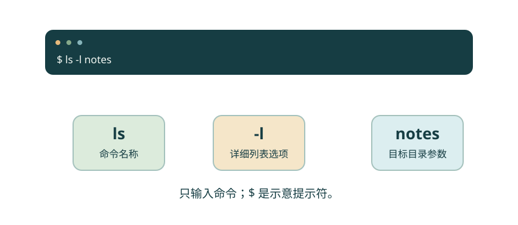
命令名告诉 Shell 做什么；选项改变行为；路径等参数指定操作对象。空格分隔各项，引号可以保护一项内部的空格。
放大查看 ↗ 保存 SVG ↓这组命令可以在任意目录运行。第一条 echo 把文字显示出来；第二条 printf 按给出的格式输出，其中 \n 表示换行。单引号把整段文字交给命令，我们会在第 8 节细讲引号。
echo '你好，Linux！'
printf '一条命令，一次观察。\n'你好，Linux！ 一条命令，一次观察。
按一次回车执行一行。命令结束后，Shell 再显示提示符。输出不是接下来需要再输入的命令；复制按钮只复制输入部分。
输入 pwd，它会显示当前工作目录。再输入 ls，它列出当前位置下的名字。现在先把它们理解为“我在哪儿”和“这里有什么”，下一节再走进目录。
pwd
ls命令一般由名称、选项和参数组成。例如 ls -l notes 中，ls 是命令名，-l 选择详细列表，notes 指定要查看的目录。选项也是一种参数，只是有特定用途；不是每个命令的参数规则都一样。
对 ls 可以试 ls --help。这不是所有程序统一支持的规则，但很多 GNU 工具支持它。也可以用 man ls 看手册；进入后按 q 退出。最小化系统可能没有安装手册，遇到 man: command not found 时先用 --help。
cd 是 Shell 的内建命令，它的帮助可以用 help cd 查看。不要以为所有命令都一定对应磁盘上的独立程序。
文字终端来自很早的计算机交互方式。今天的终端窗口保留了这种逐行输入和响应的形式，但背后已经可以运行非常丰富的程序。
动手试试
把第一条命令的内容改成“今天开始整理观察记录”，再查看 ls 的帮助。你输入的部分、终端显示的结果、最后出现的提示符，分别是什么？
不要把输出再当成命令执行。
echo 及其参数是输入；显示的那句话是标准输出；末尾的提示符表示 Shell 已准备接收下一条命令。
检查一下理解
$ 通常代表提示符，不是命令的一部分。本教材的复制按钮只复制命令。
第 04 节 · 把文件安顿好
同一个文件，为什么有时找得到，有时找不到？
区分当前位置、绝对路径和相对路径；使用 cd、pwd、ls。
打开终端后，先输入 cd ~/linux-lab。cd 改变当前工作目录，~ 在这里展开为当前用户的家目录。这里应是上一节准备好的练习副本。
如果提示没有这个目录，先用文件管理器确认材料放在哪里。不要为了让命令“成功”而随意改动陌生的系统目录。
图解 · 一棵目录树，一枚位置图钉
linux-lab 是练习根目录。notes、logs、tables、tools 和 results 都在它下面；箭头标出从 notes 经父目录进入 tables 的路线。
放大查看 ↗ 保存 SVG ↓路径是指出文件或目录位置的写法。以 / 开头的绝对路径从根目录出发；相对路径从当前工作目录出发。家目录是某个用户自己的地方，根目录是整棵目录树的起点，它们不是同一层。
下面整组命令从 linux-lab 开始。每个 pwd 都像重新看一眼图钉。参考输出中的 <练习目录> 代表你自己的实际路径。
pwd
ls
cd notes
pwd
ls
cd ../tables
pwd
cd ..<练习目录> logs notes results tables tools welcome.txt <练习目录>/notes evening.txt morning.txt 雨后 记录.txt <练习目录>/tables
cd notes 是进入当前目录下的 notes。.. 代表父目录，所以从 notes 中执行 cd ../tables，先回到 linux-lab，再进入 tables。. 代表当前目录。
动手看 · 路径会跟着出发点变化
只演示目录路径解析，不运行命令。先选 notes，再观察 ../tables；回到 linux-lab 后，同一写法会走出练习目录。
| 写法 | 含义 |
|---|---|
notes/morning.txt |
从当前位置寻找 notes 下的文件 |
../notes/morning.txt |
先到父目录，再寻找 notes 下的文件 |
~/linux-lab/notes/morning.txt |
从自己的家目录沿指定路径寻找文件 |
单独输入 cd 会回家目录；cd - 返回上一次工作目录。文件的扩展名 .txt 提供了阅读线索，但 Linux 不会只凭扩展名保证里面一定是普通文本。
在 linux-lab 中，cat notes/morning.txt 能找到文件；进入 notes 后，再用同一相对路径，会变成查找 notes 里面的另一个 notes。命令报错并不意味着文件消失了。
这里 cat 的作用是把文件内容显示到终端。遇到 No such file or directory，先检查 pwd、名字的大小写和路径拼写。Linux 常见文件系统会区分大小写，Notes 不等于 notes。
动手试试
从 linux-lab/logs 出发，用一条 cd 命令进入 notes。再用 pwd 确认位置。最后回到 linux-lab，为下一节做准备。
logs 和 notes 是同一父目录下的两个目录。
依次执行 cd ../notes、pwd、cd ..。从 logs 出发的 ../notes 先回到父目录，再进入 notes。
检查一下理解
.. 先回到 linux-lab，再进入它下面的 tables。相对路径取决于出发点。
第 05 节 · 把文件安顿好
复制、移动和删除，对原文件分别做了什么？
用 mkdir、cp、mv、rm 整理练习副本；理解覆盖和删除。
起始位置是 ~/linux-lab。原始 notes、logs、tables 保留供各节复用；本节把整理结果放到 results。
mkdir 创建目录，cp 复制，mv 移动或改名。它们都需要明确知道“从哪里来、到哪里去”。Linux 不会根据你的意图猜测缺失的目标位置。
图解 · 复制与移动，留下的东西不同
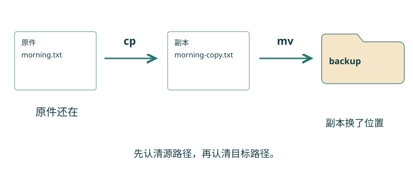
复制在目标处产生副本，原文件仍在；移动或改名改变原来的位置或名称。操作前看清已有目标是否会被覆盖。
放大查看 ↗ 保存 SVG ↓mkdir -p results/day-01
cp notes/morning.txt results/day-01/copy.txt
mv results/day-01/copy.txt results/day-01/morning-copy.txt
ls results/day-01morning-copy.txt
mkdir -p 可以创建缺失的父目录；目录已经存在时也不会因为这个原因失败。复制后，原始 morning.txt 留在 notes，副本出现在 results/day-01。
接着 mv 在同一个目录内换了文件名。如果目标是另一个目录，mv 就会把文件放过去。同一个命令可以完成改名和移动，区别来自源与目标路径。
cp 和 mv 在常见用法下可能覆盖已有目标。初次练习时可以使用 cp -i 或 mv -i，让覆盖前出现询问；仔细看清询问的目标，再决定是否继续。
选项里的 -i 在这两个命令中表示交互询问，但不要把某个字母在一个命令中的意义直接套到所有工具上。
对刚刚创建的副本，可以运行：
rm -i results/day-01/morning-copy.txt这是本节可选的真实删除操作。rm -i 会询问，回答 y 才删除这个副本；回答 n 可以保留。命令行删除通常不进入桌面回收站。
删除空目录可使用 rmdir results/day-01。如果里面仍有文件，它会拒绝删除，借此提醒你再检查。当前阶段不需要使用强制递归删除。
touch results/check.txt 在文件不存在时创建空文件；如果已经存在，它通常更新文件时间，并不会清空内容。touch 与后面要讲的 > 并不是同一种“创建文件”。
动手试试
创建 results/backup，把 morning.txt 和 evening.txt 分别复制进去，再把 evening.txt 副本改名为 sunset.txt。最后确认 notes 中两份原件仍在。
先创建目标目录；每条 cp 和 mv 都写出源、目标。
mkdir -p results/backup；cp notes/morning.txt results/backup/；cp notes/evening.txt results/backup/；mv results/backup/evening.txt results/backup/sunset.txt。最后分别用 ls notes 和 ls results/backup 核对。
检查一下理解
cp 复制内容，保留原文件。mv 才会改变原来的名称或位置。
第 06 节 · 把文件安顿好
一份长文件，怎样先看清它的大概？
选择 cat、head、tail、less；理解 wc 的计数单位。
起始位置是 ~/linux-lab。读三行笔记和读十万行日志，需要的视角不同。cat 适合短文件；head 看开头；tail 看末尾；less 让你在长文本中翻页。
日志像按时间记下的工作记录。本材料中的每一行依次写时间、级别和简短事件；这些字段约定来自我们的练习文件，并不是所有日志统一的格式。
图解 · 从不同的窗口看同一份文本

head 看开头，tail 看末尾，less 用于翻阅。wc -l 统计换行符；本例每行都有换行，得到 4。
放大查看 ↗ 保存 SVG ↓head -n 2 logs/day-01.log
tail -n 1 logs/day-01.log
wc -l logs/day-01.log08:00 INFO start 08:05 INFO lake ready 08:20 INFO saved 4 logs/day-01.log
-n 2 在这里指定两行。wc -l 输出的数字旁边还有文件名。练习日志每行都以换行符结束，所以得到 4。
严格说，wc -l 数的是换行符。假如文件最后一行没有换行符，视觉上的最后一行可能不会被计入。遇到计数不一致时，这个区别很有用。
less logs/day-01.log进入后，可以用方向键滚动，用空格向下翻页；输入 /WARN 再按回车查找 WARN，按 n 找下一个，按 q 退出。这个 q 是 less 内部的操作，不是在普通 Shell 提示符后单独执行的命令。
如果终端似乎“停在一个界面”，先观察自己是不是还在 less 里。不同程序有各自的操作方式。
单独的 wc 文件 通常依次显示行数、词数、字节数。wc -c 看字节数；在合适的字符编码环境下，wc -m 看字符数。中文字符在 UTF-8 中通常占多个字节，因此字节数不能直接叫“字数”。
另外，ls -l 显示的文件大小通常按字节计；它也不是文本的行数。我们后面会根据问题选择合适的计数方法。
动手试试
用 head 查看 notes/morning.txt 第一行，用 tail 查看最后一行，再用 wc -l 检查这份笔记的行数。
head 和 tail 都可以使用 -n 1。
head -n 1 notes/morning.txt 得到 Morning observation；tail -n 1 notes/morning.txt 得到 Birds: 12；wc -l notes/morning.txt 得到 3 行。
检查一下理解
wc -l 统计换行符。文本通常每行以换行结尾，此时它也就是行数。
第 07 节 · 从文件找到线索
屏幕上看见的结果，怎样变成一个文件？
用 nano 编辑文本；区分标准输出、> 和 >>。
起始位置是 ~/linux-lab。上一节看过文本，这次轮到自己写。很多命令默认把结果送到标准输出，通常就是终端。Shell 可以把这条输出流改送到文件，这叫重定向。
图解 · 结果和诊断走不同通道
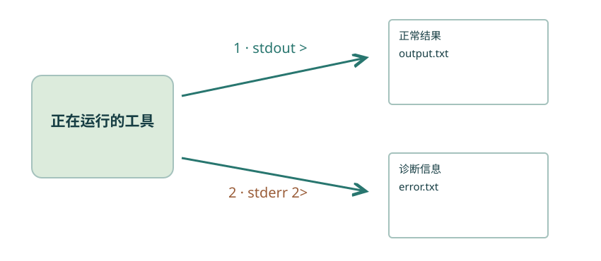
标准输出编号为 1，标准错误为 2。重定向可以分别保存；普通管道默认接走标准输出。箭头表示数据流向。
放大查看 ↗ 保存 SVG ↓printf 按给出的文字输出，\n 表示换行。下面先写两行，再添加一行。
printf 'morning\nevening\n' > results/visits.txt
printf 'after rain\n' >> results/visits.txt
cat results/visits.txtmorning evening after rain
> 会创建文件；如果文件已经存在，就先截断原内容再写入。>> 会在末尾追加。连续两次运行这组示例，第一次的 > 会重新建立两行内容，所以最后仍是三行；单独重复追加那一行则会越写越长。
不要把同一个文件同时作为正在读取的输入和 > 的目标，例如 cat notes/morning.txt > notes/morning.txt。Shell 可能在 cat 读取前就清空它。需要转换文件时，先写到一个新文件，核对后再决定如何替换。
nano results/visits.txt编辑器负责修改文本。nano 打开后可以直接输入，按 Ctrl+O 保存、回车确认文件名，按 Ctrl+X 退出。底部的 ^O 表示 Ctrl+O。如果提示找不到 nano，它可能未安装；先用已有的文本编辑器完成这一小步，软件安装在第 14 节说明。
修改后，再用 cat results/visits.txt 查看实际保存的内容。编辑器窗口里有文字，不一定意味着文件已经保存。
很多程序把正常结果写到标准输出，把诊断信息写到标准错误。两条通道可以分别保存：2> 用于标准错误。数字 2 是约定的文件描述符，不是错误的数量。
下面是刻意触发的报错实验，missing.txt 在初始材料中不存在：
cat missing.txt > results/output.txt 2> results/error.txt
cat results/error.txt第一条会失败，第二条展示保存下来的诊断信息。错误文字可能受系统语言影响，但应指出文件不存在。> 创建的 output.txt 可能为空，不能据“有输出文件”就认定任务成功。
动手试试
在 results 下选一个新的文件名，先写第一行，再追加第二行，最后使用 > 写第三行。文件里最终会有几行？先预测，再查看。
把 > 想成重新开始写，把 >> 想成接在已有内容后面。
若每次只写一行且带换行符，最终只剩第三行。重定向改变输出目的地，本身不帮你保留旧内容。
检查一下理解
> 会创建文件或截断已有文件；>> 才是追加。练习时先使用专门的结果文件。
第 08 节 · 从文件找到线索
几十个文件，怎样准确选中其中几个？
理解空格、引号与通配符；用 find 按名字查找。
起始位置是 ~/linux-lab。材料中有 notes/雨后 记录.txt。如果不加引号，空格可能使 Shell 把它拆成两个参数；命令就会去寻找两份名字不完整的文件。
cat 'notes/雨后 记录.txt'
find notes -type f -name '*.txt'雨后：湖边有水洼。 notes/evening.txt notes/morning.txt notes/雨后 记录.txt
单引号通常让其中字符保持字面意义；双引号也能保护空格，但允许后面将学到的变量展开。本节使用单引号来传递固定名字和匹配模式。引号本身一般不会成为传给命令的文件名内容。
参考输出中的 find 结果顺序可能不同，核对找到的文件即可，不必要求同一排列顺序。
通配符 * 匹配任意数量的字符，包括零个；? 匹配一个字符。在常见 Bash 文件名展开中，它们默认不会跨越路径分隔符 /，也不会自动选中以点开头的隐藏名字。
ls notes/*.txt这里 Shell 先展开匹配的路径，再把它们交给 ls。ls 并不是唯一能接收这些名字的命令。同样的模式交给删除命令会产生完全不同的后果，所以操作前先列出来看清。
动手看 · 一张文件名筛网
这里演示固定的一组名字与四种 Bash 常见模式；每个 ? 匹配一个字符。默认 * 不包含以点开头的隐藏名字，不包含子目录中的文件。
find notes -type f -name '*.txt' 从 notes 开始向下查找：-type f 限定普通文件，-name 根据名字匹配。给 *.txt 加引号，是为了让 find 收到模式本身，而不是让外层 Shell 先替换成当前位置的文件列表。
查找文件名与查找文件内容是两件事。find 回答“这个文件在哪里”，下一节的 grep 回答“哪些文本行有这个内容”。
以点开头的名字，例如 .bashrc，在默认 ls 中通常不显示。ls -a 可以列出它们；其中 . 和 .. 是前面见过的当前目录与父目录。
隐藏只是命名和显示习惯，不等于文件被加密，也不等于你不能访问。配置文件有各自用途，先阅读再修改。
动手试试
从 linux-lab 出发，用 find 在 logs 中寻找以 .log 结尾的普通文件，再试着用 ls 的通配符列出同一批文件。
区分“让 find 收到模式”和“让 Shell 展开模式”。
find logs -type f -name '.log'；ls logs/.log。当前材料没有更深的日志子目录，因此结果集合一致；以后有子目录时，两者搜索范围会不同。
检查一下理解
引号防止 Shell 提前展开 *.txt；find 才能在它搜索的目录中按模式匹配。
第 09 节 · 从文件找到线索
从很多行里，怎样找到那条出错记录？
用 grep 搜索文本；区分固定字符串和简单正则。
起始位置是 ~/linux-lab。日志里有 INFO、WARN 和 ERROR，它们在练习中分别表示普通信息、提醒和错误。我们先不看全部内容，只找想追踪的事件。
grep 从输入文本里选择匹配的行。-F 表示按固定字符串寻找；-n 把原文件行号放在结果前面。
grep -n -F 'WARN' logs/day-01.log
grep -F 'ERROR' logs/day-02.log3:08:10 WARN battery low 08:05 ERROR sensor missing
结果中的 3: 表示原文件的第 3 行，并不是“发生了三次报警”。不加 -n 时，匹配行为没有因此改变，只是不显示行号。
| 用法 | 回答的问题 |
|---|---|
grep -F 'WARN' 文件 |
哪些行含有这段固定文字？ |
grep -i -F 'warn' 文件 |
忽略大小写后，哪些行含有它？ |
grep -v -F 'INFO' 文件 |
哪些行不含有 INFO？ |
grep -c -F 'WARN' 文件 |
有多少行包含 WARN？ |
-c 数匹配的行，不是某个单词出现的总次数。同一行出现两次 WARN，仍然只计一行。
正则表达式描述文本的模式。先认识三个常见符号即可：^ 表示行首，$ 表示行尾，. 通常表示任意一个字符。
grep '^08:00' logs/day-01.log这条命令查找以 08:00 开头的行。文件名通配符和正则不是一套语法：例如通配符中的 * 与正则中的 * 不能直接互换。需要匹配字面量点号时，优先用 grep -F，避免无意中把点当模式。
本节不要求背完整正则语法。先用固定字符串解决大多数简单查找，再在确实需要时扩展。
试 grep -F 'ERROR' logs/day-01.log，它没有输出，因为这份文件中没有对应行。grep 通常在找到匹配时返回状态 0，没找到时返回 1；工具本身出错则是其他非零状态。退出状态会在第 17 节正式用到。
动手试试
分别查询两份日志中含有 WARN 的行。再找第二份日志中不含 INFO 的行。结果分别有多少行？
观察 -v 和 -c 各自改变了什么。
每份日志各有一行 WARN；第二份日志中不含 INFO 的行有两行，分别是 ERROR 与 WARN。
检查一下理解
-F 把模式当固定字符串。正则中的点通常表示任意一个字符，两者含义不同。
第 10 节 · 让小工具合作
怎样把一长串记录变成一份计数？
理解管道；组合 sort、uniq 和 wc；查看中间结果。
起始位置是 ~/linux-lab。tables/birds.txt 每行记录一次观测中的物种名称，共六条。我们想知道每个名称出现了几条记录。
管道 | 把左侧命令的标准输出连接到右侧命令的标准输入。它传递数据，不会自动产生一个中间文件，也不会自动把标准错误一起传过去。
图解 · 小工具怎样合作
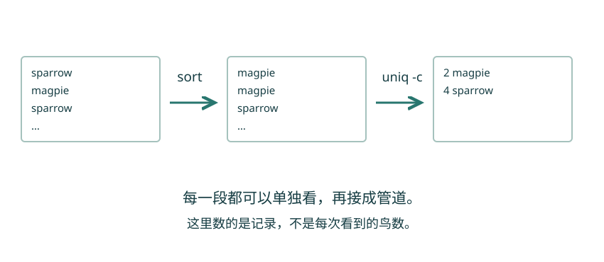
相同名称先排在一起，uniq -c 才能合并相邻行并计数。这是记录条数，不能直接当作鸟的数量。
放大查看 ↗ 保存 SVG ↓sort tables/birds.txt
sort tables/birds.txt | uniq -cmagpie
magpie
sparrow
sparrow
sparrow
sparrow
2 magpie
4 sparrow第一条只排序，让你看见中间结果。第二条把同一份排序结果交给 uniq -c，合并相邻相同的行并计数。数字前可能有用于对齐的空格。
sort 不指定其他选项时通常按文本排序，顺序会受语言区域设置影响。uniq 只比较相邻行；因此未排序的输入不一定能得到全局计数。这里先排序，是因为我们只关心名称及出现次数，不需要保留观测的先后顺序。
动手看 · 每一站的数据
sparrow magpie sparrow sparrow magpie sparrow
使用与随包 birds.txt 相同的六条记录；演示相邻行合并。关闭排序后，同一种名称会分散到多组。
如果整条管道结果奇怪，把它拆开看：原文件是否完整？排序后相同值是否靠在一起？最后的数字是记录条数，还是鸟的数量？
本例 sparrow 有 4 条记录，不代表只有 4 只麻雀。每次记录里观察到多少只，保存在另一张表的 count 列。计算之前，先说清自己数的是什么。
Unix 工具传统鼓励程序完成明确的任务，并通过简单的数据接口合作。管道让“按行输出文字”的工具很容易拼接。今天处理日志和简单表格时，这种思路仍然实用。
比喻成传送带很直观，但不是所有程序都接收文本标准输入；也不是任意两条命令都可以随意串起来。连接前要了解左边产出什么、右边需要什么。
动手试试
在已有管道末尾接上 wc -l，数一数物种名称的种类数。再解释为什么这个数字不是六。
可以用 sort tables/birds.txt | uniq | wc -l。
结果为 2。uniq 合并相邻重复名称后只剩 magpie 与 sparrow 两行，因此最后数的是不同名称的数量。
检查一下理解
通常先 sort 把相同内容放在一起，再 uniq 或 uniq -c。排序会改变原有顺序。
第 11 节 · 让小工具合作
先弄清表头和分隔符，再动手选列。
读懂 TSV 表头；用 cut 选列、sort -n 排数值；保留字段含义。
起始位置是 ~/linux-lab。tables/observations.tsv 第一行是表头，后面六行是记录。TSV 使用制表符分隔字段；屏幕上看起来像若干空格，但实际字符不同。
| 字段 | 含义 |
|---|---|
| date | 日期 |
| site | 地点：lake 或 wood |
| species | 物种名称 |
| count | 这一次记录到的数量 |
一行是一条观测记录，不是一只鸟；一列是一种属性。这个区分在以后使用电子表格、R 或 Python 时同样重要。
图解 · 先知道一行与一列代表什么
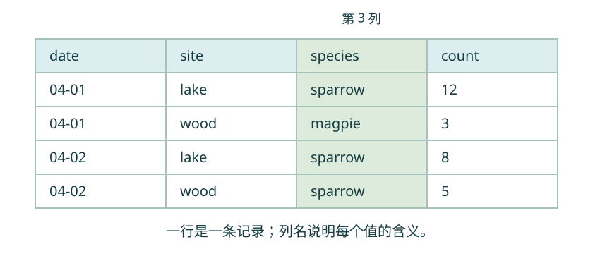
每行是一次记录，species 是物种，count 是这一次的观测数量。高亮列帮助你对照 cut 的字段编号。
放大查看 ↗ 保存 SVG ↓tail -n +2 表示从第 2 行开始输出，与 tail -n 2 的“只取最后两行”不同。cut -f 默认按制表符选取字段，2,4 表示第二和第四列。
head -n 1 tables/observations.tsv
tail -n +2 tables/observations.tsv | cut -f 2,4
tail -n +2 tables/observations.tsv | cut -f 4 | sort -ndate site species count lake 12 wood 3 lake 8 wood 5 lake 2 wood 7 2 3 5 7 8 12
第一条让我们先确认字段名称。第二条留下地点与数量；第三条只保留数量，再交给 sort -n 按数值排序。你应该看到 2、3、5、7、8、12，而不是把 12 排在 2 前面。
把表头也交给数值排序，可能让它出现在意外的位置。此处先剔除表头再处理数据；如果要输出一张完整的新表，应另外写入正确的新表头，再追加整理后的数据。
我们的表格非常小，约定每条记录占一行，字段内部没有制表符或换行。cut 不会理解带引号、嵌入逗号等复杂 CSV 规则。遇到那类表格，应使用真正的表格解析工具。
选出第二和第四列后，物种与日期信息已经不在输出里。并不是原文件被删除了这些列，而是新输出只包含你要求的部分。新文件的用途应该与保留下来的信息一致。
动手试试
先用管道统计 observations.tsv 的数据记录条数，再列出物种名称并统计每种的记录条数。是否与上一节一致？
先用 tail -n +2 排除表头。物种是第三列。
tail -n +2 tables/observations.tsv | wc -l 得到 6；tail -n +2 tables/observations.tsv | cut -f 3 | sort | uniq -c 得到 magpie 2 条、sparrow 4 条，与上一节一致。这仍然不是各物种的观测数量之和。
检查一下理解
默认排序不等于数值排序。数值列需要指定数值比较，表头也应与数据行分开。
第 12 节 · 让小工具合作
压缩包里是什么，能不能先看再解压？
区分打包与压缩；用 tar 列出、生成和解开自己的归档。
起始位置是 ~/linux-lab。归档把多个文件及目录组织在一个包中；压缩使用编码方式减少存储体积。两件事经常连在一起，但不是同一件事。
tar 用于归档；常见的 .tar.gz 是 tar 归档再经过 gzip 压缩。压缩不保证每种文件都会明显变小，已压缩过的图片常常变化有限。
图解 · 把文件装箱，再压缩
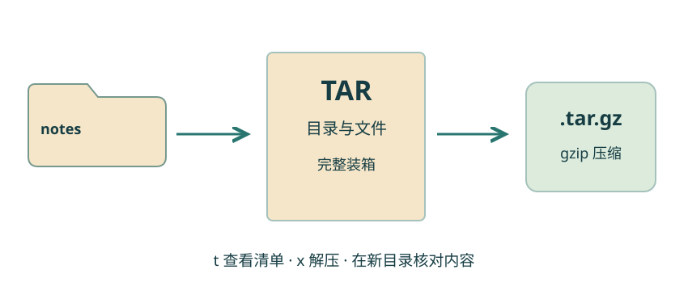
tar 保存文件与目录层次，gzip 压缩归档。查看清单后在新目录解开，才能看清有没有多一层目录。
放大查看 ↗ 保存 SVG ↓tar -czf results/notes.tar.gz notes
tar -tzf results/notes.tar.gz | sort
mkdir -p results/unpacked
tar -xzf results/notes.tar.gz -C results/unpacked
cat results/unpacked/notes/morning.txtnotes/ notes/evening.txt notes/morning.txt notes/雨后 记录.txt Morning observation Lake: clear Birds: 12
先创建 notes.tar.gz，再列出其中的名字，最后解压到新目录 results/unpacked。末尾读取解出的 morning.txt，用内容验证，而不只看“有没有一个文件夹”。
| 选项 | 在这组用法中表示什么 |
|---|---|
c |
创建归档 |
t |
列出归档内的条目 |
x |
解出归档 |
z |
使用 gzip |
f |
后面指定归档文件名 |
-C 目录 |
在指定目录中完成相关操作 |
我们打包时指定 notes，因此解压后会在 results/unpacked 下面得到 notes。先列出归档内容，能看清它会带来哪些目录层级。
下载的资料包尤其适合先查看、再解压到一个新的空目录。主线只处理自己创建的归档；不要把陌生归档直接展开到重要项目目录。
资料页提供的练习 ZIP 可以用图形界面解压。命令行下载可使用 curl 或 wget，但不是理解归档的前提。下载完成也不自动等于内容正确，重要资料应核对来源和提供方公布的校验值。
校验值像文件内容的指纹；相同的校验值可以帮助核对传输前后内容是否一致，但它本身不证明来源可信。需要核对 SHA-256 时，可用 sha256sum 文件名 与提供方公布的值比较。
动手试试
仿照示例，把 logs 打成 results/logs.tar.gz，先列出清单，再解压到一个新目录。确认两份日志都在，且原始 logs 仍然存在。
打包不等于移动；新建的解压目录与原始目录分开。
tar -czf results/logs.tar.gz logs；tar -tzf results/logs.tar.gz；mkdir -p results/logs-copy；tar -xzf results/logs.tar.gz -C results/logs-copy。清单与解出目录都应包含两份日志。
检查一下理解
t 表示列出归档内容，z 表示通过 gzip 处理，f 后面跟归档文件名。
第 13 节 · 让程序为你工作
Permission denied 到底在说什么？
区分文件与目录权限；理解所有者、组和执行权限。
起始位置是 ~/linux-lab。Linux 可以让多个用户使用同一系统。文件通常有一个所有者和一个所属组，基本权限分别针对所有者、所属组和其他人。
运行 ls -l notes/morning.txt，开头可能看见 -rw-r--r--。第一位描述文件类型；随后九位分成三组，分别是所有者、组、其他人的权限。实际权限随环境而变，不必与例子完全相同。
图解 · 一份文件，三组基本权限
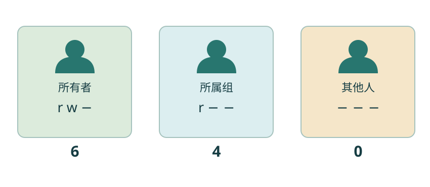
从左到右是所有者、所属组和其他人。本图展示普通文件的 640：所有者读写、组只读、其他人无权限；目录含义另作说明。
放大查看 ↗ 保存 SVG ↓对普通文件，权限中的 r 允许读取，w 允许写入，x 允许将其作为程序尝试执行。文件拥有 x 也不保证它是有效的程序。
对目录，r 主要允许列出目录项，x 允许搜索／穿过目录路径，w 与在目录中创建或删除目录项有关。能否删除某个文件主要取决于其父目录的相应权限和其他限制，不只是文件自身有没有 w。
动手看 · 普通文件的模式位
这里只演示普通文件的基本模式位，不修改真实文件，也不包含 ACL 或管理员能力。
cp notes/morning.txt results/private-note.txt
chmod u=rw,go= results/private-note.txt
stat -c '%a' results/private-note.txt600
chmod 修改模式位。u=rw 给所有者读写，go= 清除组和其他人的模式位。stat -c '%a' 在 GNU stat 中显示八进制权限；本例得到 600，因为 r 对应 4、w 对应 2、x 对应 1。
这只是基本 Unix 权限的练习，并不是加密，也不能保证管理员无法读取。ACL、挂载设置等可能进一步影响访问；入门先掌握基本三组规则。
下一节会遇到 chmod u+x：仅为所有者增加执行权限，不把其他位一并改掉。比起记住一串数字，这种写法更容易看清本次改动。
遇到 Permission denied，先核对自己是谁、操作哪个路径、需要哪种权限。sudo 可以按系统授权以其他身份执行命令，常见的是管理员身份；它不是通用的“修复报错”前缀。共享服务器没有授予权限时，应联系管理员或使用自己的目录。
动手试试
在网页演示中设置所有者读写、组只读、其他人无权限。读出符号表示和数字表示，再说明与 600 有何区别。
每组分别把 r=4、w=2、x=1 相加。
符号是 rw-r-----，数字是 640。相比 600，所属组多了读取权限。
检查一下理解
目录的 x 是搜索／穿越权限；目录的 r 是列出目录项。文件与目录的 rwx 意义有区别。
第 14 节 · 让程序为你工作
明明有一个程序，为什么仍然提示找不到？
理解 PATH、command -v 与 ./；区分程序安装和启用环境。
起始位置是 ~/linux-lab。输入 ls 时没有写完整路径，Shell 怎么知道去哪里找？对外部程序，PATH 列出一组搜索目录，通常以冒号分隔。Shell 还会处理别名、函数和内建命令，所以不能把所有命令都简单理解成 PATH 中的文件。
command -v ls
command -v bashcommand -v 告诉你当前 Shell 会如何识别这个名字。返回路径因环境而异；cd 这样的内建命令可能直接返回命令名。
图解 · 沿 PATH 寻找外部程序

Shell 按搜索顺序查找外部命令；前面的目录可能遮住后面的同名程序。示意不包含别名、函数和内建命令等其他处理。
放大查看 ↗ 保存 SVG ↓材料中的 tools/hello.sh 是一个很小的 Bash 程序，内容只会输出 hello。先给自己执行权限，再通过路径运行：
chmod u+x tools/hello.sh
./tools/hello.shhello
./ 指明从当前目录出发。不给路径、只输入 hello.sh，通常不会自动搜索当前目录。也可以运行 bash tools/hello.sh，明确让 Bash 读取脚本；这需要文件可读，不要求脚本本身具有执行位。
环境变量可以把设置传给后续启动的程序。查看 PATH 可以用 printf '%s\n' "$PATH"。这里 $PATH 是读取变量，双引号保护展开后的整体内容；变量在第 16 节继续讲。
常见的个人工具目录是 ~/bin。需要时可以在当前终端尝试 export PATH="$HOME/bin:$PATH"，把它放在已有搜索路径前面。不要用一个新目录直接覆盖全部 PATH。永久配置涉及 Bash 启动文件，先在临时会话验证，再按附录阅读 .bashrc 的说明。
Ubuntu 的软件包可以由系统包管理器安装。自己的 Ubuntu 环境若缺少 nano，可先运行 sudo apt update 更新包索引，再运行 sudo apt install nano。这些操作需要网络、磁盘空间和管理员授权；它们只属于环境准备，不会在打开教材或构建网页时自动执行。
apt update 更新索引，不等于已经升级所有软件。没有管理权限的服务器不能照搬这一路线。需要用户级环境时，再看附录中的 Conda 基础。
GNU 工具、Linux 内核和发行版来自不同项目。发行版与包管理器把这些部件组织在一起，因此“软件已经安装”和“当前 Shell 找到了哪一份软件”也需要分别确认。
动手试试
切换到 notes 后，再输入 command -v ls。ls 的程序位置是否因为工作目录改变而变化？随后回到 linux-lab。
区分“我要处理的文件在哪里”和“执行工具本身在哪里”。
在没有其他配置变化时，ls 通常仍指向同一程序；工作目录改变的是相对路径的起点，不会自动把系统工具移动到 notes。
检查一下理解
./ 指明路径；仅输入程序名通常按 Shell 的查找规则寻找，其中外部程序会在 PATH 中查找。
第 15 节 · 让程序为你工作
没有马上回到提示符，是卡住了吗？
理解前台、后台与进程；查看日志、CPU、内存和磁盘。
一个程序文件可以被多次运行，每次运行产生一个或多个进程。PID 是系统用于识别进程的编号。不要把程序文件名、终端窗口和 PID 混成同一个东西。
在前台运行时，终端通常等它结束再给出提示符；在后台运行时，你可以继续输入其他命令。后台不等于任务已经完成，也不保证关掉连接后继续运行。
图解 · 同一个程序，可以有不同的运行实例
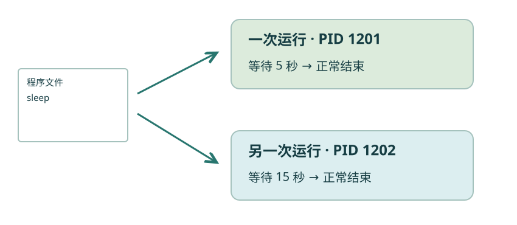
程序文件好比保存的步骤，进程是正在运行的一次。PID 用于识别进程，图中的编号仅为示意。
放大查看 ↗ 保存 SVG ↓这一段可以在练习目录运行：sleep 1 等待一秒，& 把它放到后台，wait 等待当前 Shell 的后台任务完成。
sleep 1 &
wait
echo '后台任务已结束'后台任务已结束
交互终端可能额外显示任务编号和 PID，它们会变化，因此参考输出只列程序本身的文字。想多观察一会儿，可以手动运行 sleep 15 &，随后使用 jobs 查看当前 Shell 的作业；它不代表整个系统的进程清单。
用 ps -u "$USER" 查看自己的进程；在使用这个变量前，先通过 echo "$USER" 确认当前环境中的用户名。top 动态显示资源情况，按 q 退出。使用 kill PID 前必须确认目标是自己刚启动的练习进程；默认的终止请求与强制终止不是同一种处理方式。
| 操作 | 适合观察什么 |
|---|---|
tail -f 日志文件 |
继续观察后来追加的日志；Ctrl+C 停止跟随 |
free -h |
内存使用情况，注意 available 等字段 |
df -h . |
当前目录所在文件系统的容量和剩余空间 |
du -sh results |
results 目录占用了多少磁盘空间 |
内存中的缓存不一定是“浪费”；磁盘满了也不同于内存不足。先对应报错判断资源类型，再决定下一步。
通过 SSH 运行任务时，连接断开可能影响进程。nohup 或 tmux 有各自的适用场景，不能把单独一个 & 理解为可靠的长期托管。附录给出进一步学习入口，主线只运行短小练习。
动手试试
运行 sleep 15 &，立即执行 jobs；等十几秒再查看。说明任务还在运行、任务结束、命令失败三种状态为什么不同。
没有马上显示结果并不自动等于失败。
等待期间作业处于运行状态；时间到了，sleep 正常结束，随后不再是运行中的作业。失败要结合退出状态或诊断信息判断。
检查一下理解
df 报告文件系统的容量和使用情况，du 统计指定文件或目录的磁盘占用。
第 16 节 · 把重复交给脚本
已经做对的一串操作，怎样下次继续用？
创建 Bash 脚本；使用变量、引号和第一个位置参数。
起始位置是 ~/linux-lab。脚本是保存命令的文本文件。它让我们再次执行同一组步骤，也让别人看清做过什么；脚本本身不会保证步骤正确。
变量把名字与值联系起来。Shell 赋值时等号两侧不能随意加空格；读取变量时使用 $名字。
record='notes/雨后 记录.txt'
cat "$record"雨后：湖边有水洼。
这里 record 保存路径，"$record" 将包含空格的值作为一个参数交给 cat。Shell 的普通变量默认不会全部传给子进程；第 14 节的 export 用于把变量加入后续程序的环境。
材料中的 tools/line-count.sh 内容如下。# 开头的行是注释；第一行 #! 称为 shebang，用于直接执行脚本时指定解释器。
$1 是第一个位置参数，不需要把这里的 1 改成文件名。< 把指定文件接到 wc 的标准输入，因此 wc 只显示计数，而不附带文件名。
bash tools/line-count.sh notes/morning.txt输出应为 3。把最后一个参数换成 logs/day-01.log，同一个脚本应输出 4。对于这个最小示例，传入一个存在、可读的文本文件是使用前提；下一节再学习如何检查前提。
先运行原版确认结果，再复制一份脚本进行修改。比如在 wc 前加入 echo '正在数行'，观察新增输出来自哪里。不要一次修改目录、文件名和统计规则，最后分不清是哪一处产生影响。
脚本由 Bash 逐行执行，通常不会显示交互提示符。脚本中用 cd 改变的位置属于执行它的进程；使用 bash 脚本 时，一般不会改变原来终端的工作目录。
如果脚本从 Windows 编辑器保存后出现带 \r 的奇怪报错，可能是 CRLF 与 LF 行尾差异。使用支持 Unix/LF 行尾和 UTF-8 的编辑器保存，先确认再改动文件。
动手试试
给 line-count.sh 传入带空格的中文笔记路径，观察行数。再解释去掉引号可能发生什么。
调用方式是 bash tools/line-count.sh 'notes/雨后 记录.txt'。
得到 1 行。去掉引号时，Shell 会把带空格的路径拆开，$1 只收到前一部分，从而无法打开正确文件。
检查一下理解
双引号保留变量值内部的空格，让它作为一个参数传递。
第 17 节 · 把重复交给脚本
一份记录能处理，十份呢？缺了一份怎么办？
使用简单 if 和 for；检查文件存在；理解退出状态。
起始位置是 ~/linux-lab。到这里，已经有一个能处理单个文件的动作。循环让同一个动作应用到一组对象；条件判断决定某个动作是否应该执行。
图解 · 每次拿一份，做相同的检查
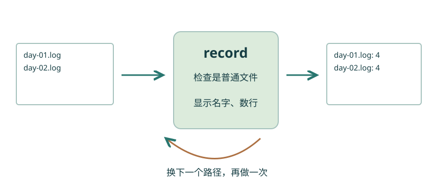
for 依次给变量赋一个路径；if 先检查，再执行动作。下一次循环换一个路径，动作仍然相同。
放大查看 ↗ 保存 SVG ↓for record in logs/*.log; do
if [ -f "$record" ]; then
printf '%s: ' "$record"
wc -l < "$record"
fi
donelogs/day-01.log: 4 logs/day-02.log: 4
for record in logs/*.log 依次把匹配到的路径放进 record；do 和 done 围住每次重复的动作。变量值需要双引号保护。
if [ -f "$record" ] 检查它是否是普通文件。[ 和 ] 周围的空格是语法的一部分，不能随意省略；then 开始条件成立后的动作，fi 结束判断。这也能避免没有匹配文件时，把未展开的 logs/*.log 当成一个真实文件处理。
退出状态通常用 0 表示成功，非零表示其他状态。$? 表示刚结束的上一条命令的状态；执行另一条命令后它就会更新。
一个直接的判断方式是：
if grep -F 'ERROR' logs/day-02.log; then
echo '发现需要检查的记录'
else
echo '没有得到匹配；如有报错，还要检查路径和读取权限'
fi这里 else 包含没匹配到和 grep 出错两种可能，不能把它一概解释成“日志完全正常”。需要严格区分时，再分别检查退出状态；综合脚本会示范这个细节。
[ -d 路径 ] 检查目录，[ -r 路径 ] 检查当前身份是否可读；整数比较中 -eq 表示相等，-gt 表示大于。本节先会用少数明确场景，不需要背完整运算符表。
常见错误是少一个 done、多一个 fi，或给变量赋值时加入不合适的空格。可以用 bash -n 脚本文件 只检查 Bash 语法；通过语法检查不意味着计算逻辑一定正确。
动手试试
把循环的范围改成 notes/*.txt，分别显示每份文件名与行数。能不能正确处理带空格的中文文件名？
Shell 展开的每个路径作为一个循环项；使用时继续保留 "$record" 的引号。
保留其他部分，只把 logs/.log 改成 notes/.txt。两份英文笔记各 3 行，中文笔记 1 行。文件名里的空格不会因为这样展开而自动拆成两项。
检查一下理解
通常 0 表示成功，非零表示其他状态或错误。grep 没有匹配时返回 1，并不一定是软件损坏。
第 18 节 · 把重复交给脚本
这次，自己把文件变成可检查的结果。
综合整理、搜索、汇总和脚本；根据输入核对结果。
起始位置是 ~/linux-lab。观察站要交接一周材料，需要两份结果：每个物种有几条观测记录，以及两份设备日志中出现 WARN 的位置。
先把交付说清楚：输入是固定的 observations.tsv 和两份 day 日志；结果放在 results/report；统计的是记录条数，不是鸟的数量总和。所有材料都是练习数据。
给自己三个小任务：去掉表头、提取物种列并计数；从两份日志中找到 WARN；把两种结果保存成不同文件。
动手试试
尽量只使用前面学过的命令，完成以上两个结果文件，并读取它们检查内容。预期是 magpie 2 条、sparrow 4 条，以及两行 WARN。
表格从第 2 行开始；物种是第 3 列；查日志可以把两个路径都传给 grep。
下方的分步示例是一种解法。也可以用其他等价组合，但需要解释输入、过滤与统计的含义。
mkdir -p results/report
tail -n +2 tables/observations.tsv | cut -f 3 | sort | uniq -c > results/report/species-records.txt
grep -n -F 'WARN' logs/day-01.log logs/day-02.log > results/report/warnings.txt
cat results/report/species-records.txt
cat results/report/warnings.txt 2 magpie
4 sparrow
logs/day-01.log:3:08:10 WARN battery low
logs/day-02.log:3:08:10 WARN battery low随包的 tools/summarize.sh 把相同步骤保存下来，并补充几个必要检查：必须传入一个练习目录、输入文件可读、输出目录能创建、处理失败时给出提示。
bash tools/summarize.sh .这里 . 把当前 linux-lab 目录传给脚本。脚本的全部内容可以展开查看或直接下载：
#!/usr/bin/env bash
# A deliberately small report for this course's bundled TSV and logs.
# pipefail makes a failed stage visible in the pipeline's exit status.
set -o pipefail
if [ "$#" -ne 1 ]; then
echo 'Usage: bash summarize.sh <linux-lab directory>' >&2
exit 2
fi
project=$1
for required in tables/observations.tsv logs/day-01.log logs/day-02.log; do
if [ ! -r "$project/$required" ]; then
printf 'Cannot read: %s\n' "$project/$required" >&2
exit 2
fi
done
output="$project/results/report"
if ! mkdir -p "$output"; then
exit 1
fi
if ! tail -n +2 "$project/tables/observations.tsv" | cut -f 3 | sort | uniq -c > "$output/species-records.txt"; then
echo 'Could not build species record counts.' >&2
exit 1
fi
grep -n -F 'WARN' "$project/logs/day-01.log" "$project/logs/day-02.log" > "$output/warnings.txt"
status=$?
if [ "$status" -gt 1 ]; then
echo 'Could not search the logs.' >&2
exit "$status"
fi
printf 'Report saved in: %s\n' "$output"
cat "$output/species-records.txt"$# 是参数个数，exit 2 用非零状态结束脚本，>&2 将提示送到标准错误。set -o pipefail 让管道中某个工具失败时，整条管道也能返回失败状态；它本身不会自动退出脚本，所以这里配合 if 检查。if ! ... 表示在命令失败时进入对应分支。
搜索 WARN 后单独检查状态，是因为 grep 没找到时返回 1，可能只是“本次没有提醒”；大于 1 才按搜索失败处理。先理解这几个保护措施的作用，再逐行对应代码。
脚本约定表格格式与随包材料一致，并不是任意数据的通用分析器。换成自己的数据时，还需要核对表头、分隔符、缺失值和字段含义。
你已经经历了找位置、管文件、读内容、提线索、接工具、存脚本的完整过程。以后遇到新任务，可以先问三件事：输入是什么，想得到什么结果，怎样核对它。
需要回查时，课程目录、命令索引和术语手册都可以单独使用。下一步先选择一个真实而小的问题，把这里的方法用一次。
检查一下理解
执行成功只是一步；还应确认处理了哪些输入、表头是否排除、统计的是记录条数还是观测数量。
环境与系统
Linux 严格指内核，日常也用来指使用它的一套操作系统。
Ubuntu 是使用 Linux 内核的发行版。
先知道自己在学习哪种系统，再理解常用文件和程序操作。
Linux 不是一种编程语言，终端也不是内核。
环境与系统
操作系统中协调硬件资源并向程序提供基础能力的核心部分。
程序读取磁盘文件时需要使用操作系统提供的能力。
把硬件资源这一层与终端窗口、命令解释器区分开。
完整可用的系统还需要工具、库和其他软件。
环境与系统
把内核、软件与维护机制组织成可安装系统的集合。
Ubuntu、Debian 都是 Linux 发行版。
选择 Ubuntu 作为一致的练习环境，减少工具差异带来的困惑。
不同发行版的软件版本和管理命令可能不同。
环境与系统
呈现文字输入输出的交互界面；这里通常指终端模拟器窗口。
在 Ubuntu 中打开终端应用。
找到输入命令和查看输出的地方，区分窗口与其中运行的程序。
终端窗口与里面运行的 Shell 不是同一程序。
环境与系统
解释命令、组织输入输出并启动程序的命令解释器。
输入带管道的命令时，Shell 负责建立连接。
理解为什么引号、管道和重定向由 Shell 先解释。
Shell 不只是显示文字，也会解释引号和变量。
环境与系统
一种常用 Shell，也是本课脚本使用的解释器。
bash tools/line-count.sh notes/morning.txt。
确保终端示例与 .sh 脚本使用本课程说明的语法。
其他 Shell 的部分语法与 Bash 不同。
环境与系统
让 Windows 使用 Linux 环境的系统功能。
在 Windows 中安装并打开 Ubuntu 发行版。
为 Windows 用户准备可跟做的 Ubuntu 环境。
PowerShell 与 Ubuntu Bash 的命令不能不加区分地混用。
环境与系统
用于加密远程登录等操作的一组协议和工具。
用已有账号连接自己的 Linux 服务器。
为已有服务器账号的读者提供另一条操作环境入口。
命令通常在远程机器运行；本机文件不会自动出现在远程机器。
命令与运行
Shell 用来提示可以输入命令的一段文字。
river@station:~$ 后面输入 pwd。
判断哪些是需要输入的命令，哪些只是环境的提示。
通常不需要把教程展示的 $ 一起复制。
命令与运行
用于选择命令行为的一类参数。
ls -l 中的 -l 选择详细列表。
看懂 -l、-n 等写法怎样改变具体命令的行为。
同一个字母在不同命令中的含义可能不同。
命令与运行
传给命令的一项输入信息，可以是选项、路径或其他值。
ls -l notes 中 -l 和 notes 都是参数。
明确命令的输入对象，尤其注意路径中的空格。
没有引号保护的空格可能把一个预期的值拆成多个参数。
命令与运行
解释命令用途、语法和选项的参考文档。
man ls，阅读时按 q 退出。
遇到不熟悉的命令时查找用法，不必靠记忆猜选项。
精简系统可能未安装 man 或完整手册。
命令与运行
由 Shell 自身实现的命令。
cd 改变当前 Shell 的工作目录。
解释为什么 cd 的帮助使用 help，为什么它会改变当前 Shell 的位置。
不是每个命令都对应 PATH 中的一个独立可执行文件。
文件与路径
当前进程处理相对路径时的默认出发位置。
pwd 显示当前工作目录。
每次寻找相对路径前，先用 pwd 确认自己站在哪里。
进入别的目录后，同一个相对路径可能指向另一位置。
文件与路径
分配给某个用户保存个人文件和配置的目录。
~/linux-lab 位于当前用户的家目录下。
给练习副本选一个属于自己的位置，并理解 ~ 的作用。
家目录不一定都在 /home 下，也不等于根目录。
文件与路径
Linux 目录树的起点，用 / 表示。
/home 从根目录开始寻找 home。
读懂以 / 开头的路径，并区分系统起点与个人家目录。
根目录与名为 root 的管理员账号不是同一概念。
文件与路径
表示文件或目录位置的写法。
notes/morning.txt 指向某个目录中的文件。
给文件操作写出准确的源位置和目标位置。
路径是写法，不保证目标一定存在。
文件与路径
从根目录出发的完整位置表示。
/home/river/linux-lab/notes。
在不依赖当前工作位置时明确指向同一文件。
具体用户名和家目录位置因机器而异。
文件与路径
相对于当前工作目录解释的路径。
在 notes 中用 ../tables 到达旁边的 tables。
在 notes、logs 与 tables 之间用短路径移动。
换一个出发点，同一写法的含义可能变化。
文本与数据
标记文本行结束的字符。
printf 'hello\n' 在 hello 后输出换行。
解释 wc -l 的结果，排查末行缺少换行导致的差异。
wc -l 数换行符；末行没有换行时，视觉行数可能不一致。
文本与数据
常见的数据存储计量单位，通常由 8 位组成。
wc -c 查看文件字节数。
区分文件存储大小、字符数和行数。
一个中文字符在 UTF-8 中通常占多个字节。
输入与输出
程序输出正常结果的约定通道，编号为 1。
cat 的输出可以显示到终端或写入文件。
理解屏幕上的正常结果怎样接到文件或下一个工具。
输出文件存在不代表运行成功，也不保证结果完整。
输入与输出
程序输出诊断信息的约定通道，编号为 2。
2> results/error.txt 保存错误信息。
单独保存诊断信息，判断有结果文件是否真的意味着成功。
通道名是约定；具体软件也可能把其他信息写到这里。
输入与输出
程序接收输入的约定通道，编号为 0。
管道右侧的 uniq 读取左侧送来的文本。
理解管道右端与 wc -l < 文件 从哪里接收内容。
不是所有程序都会读取标准输入。
输入与输出
由 Shell 调整命令输入或输出的来源与去向。
> 覆盖写入，>> 追加写入，< 从文件读入。
把观察记录与程序结果保存下来，区分覆盖和追加。
重定向通常在命令真正运行前建立，会影响已有目标文件。
输入与输出
把一个命令的标准输出接到下一个命令的标准输入。
sort 文件 | uniq -c。|普通的
将排序、相邻去重和计数连成可以逐段核对的步骤。
不会自动把标准错误传过去。
文本与数据
用于创建和修改文本文件的软件。
nano results/visits.txt。
修改自己的笔记和脚本，并确认内容已经保存。
屏幕上改了内容不等于已经保存到文件。
命令与运行
控制 Shell 如何解释一段字符的机制。
用单引号保护带空格的固定文件名。
保护带空格的路径，并把模式完整传给 find。
单引号与双引号对变量展开的处理不同。
文件与路径
Shell 根据模式展开文件名的一种机制。
notes/*.txt 可展开为匹配的路径。
按文件名选择一批日志或笔记，在批量操作前先核对范围。
通配符不是正则表达式；默认通常不匹配隐藏名字。
文本与数据
从文本中选出匹配某种模式的行的工具。
grep -n -F WARN logs/day-01.log。
从设备日志里找到 WARN、ERROR 和对应行号。
-c 统计匹配行，不是子串出现的总次数。
文本与数据
表达文本匹配规则的一套模式语言。
^08:00 匹配以 08:00 开头的行。
在确实需要按行首等规则搜索时描述一个简单模式。
正则中的 * 与文件名通配符中的 * 含义不同。
文本与数据
按照比较规则重新排列文本行。
sort -n 让数字按数值顺序排列。
让重复记录靠在一起，或把数量按数值排好。
默认文本排序受区域设置影响，也会改变原始记录顺序。
文本与数据
比较并合并相邻相同的文本行。
sort 文件再 uniq -c，可以统计各行出现次数。
在排序后统计每个物种名称的记录条数。
未相邻的重复行不会直接被合并。
文本与数据
以制表符分隔字段的一种表格文本形式。
observations.tsv 有 date、site、species、count 四列。
按表头和制表符选取观测表的正确字段。
屏幕对齐的空格不一定就是制表符。
文本与数据
常用逗号分隔字段，并约定引号等规则的表格文本形式。
包含逗号的一个字段可能需要引号包围。
知道何时简单切列不足以正确处理一张表。
简单按逗号切割不能正确解析所有 CSV。
文件与路径
把多个文件和目录组织成一个可保存或传输的包。
tar -cf notes.tar notes。
保留目录结构，把笔记或日志作为一份资料分享。
打包与压缩是两件不同的事。
文件与路径
通过编码方式减少数据占用的过程。
gzip 常用于压缩 tar 归档。
分清 tar 与 gzip 的职责，并理解压缩包后缀。
已经压缩过的数据不一定还能明显变小。
文件与路径
根据内容计算的摘要，用于辅助比较文件内容。
用 sha256sum 比对提供方公布的 SHA-256。
核对下载或复制前后的文件内容是否一致。
校验一致不等于内容安全或来源可信。
权限与进程
系统用于识别身份及其权限的账号概念。
whoami 显示当前有效用户名。
确认当前操作身份以及自己的工作目录。
同一个人在不同机器上可能使用不同账号。
权限与进程
文件所属的用户身份。
ls -l 显示所有者与所属组。
读取 ls -l 中的身份信息，判断哪一组模式位适用。
所有者不等于唯一能访问文件的人。
权限与进程
把用户组织起来以便管理权限的机制。
共享目录可以给某个组读取权限。
理解共享系统中为什么一组人可能拥有共同的访问权限。
用户可以属于多个组。
权限与进程
限定身份能够执行哪些文件或目录操作的规则。
普通文件的 r、w、x 分别涉及读、写、执行。
解释 Permission denied，并有目的地修改练习副本的权限。
目录的 rwx 含义不同，还可能受 ACL 等机制影响。
环境与系统
保存外部程序搜索目录列表的环境变量。
多个目录通常用冒号分隔，按顺序查找。
排查 command not found，并确认同名工具到底使用了哪一份。
PATH 与某个文件的普通路径不是同一个概念。
环境与系统
传给后续启动程序的一组命名设置。
export 把变量加入后续程序的环境。
观察 PATH 这类设置怎样影响后续启动的程序。
Shell 中的普通变量并不都会自动导出。
环境与系统
按约定打包的软件及其安装元信息。
Ubuntu 通过 apt 安装 nano。
在缺少编辑器或小工具时，通过适合环境的管理方式安装。
安装成功不一定代表当前 Shell 调用的是这一份软件。
环境与系统
管理软件包和相对隔离的软件环境的工具。
为特定工具组合创建一个环境。
在有需要时为小工具准备独立环境，不把软件环境和数据目录混淆。
环境不是一台虚拟机；激活环境也不是进入某个数据目录。
权限与进程
正在执行的程序实例及其运行状态。
两次运行同一程序可以产生不同进程。
区分磁盘上的程序与当前正在进行的工作。
程序文件、进程和终端窗口不是一一对应。
权限与进程
系统用于识别进程的编号。
ps 列出进程编号及相关信息。
在查看任务或请求终止时准确识别自己的进程。
编号会变化和复用，不能照抄别人的 PID 去终止任务。
权限与进程
与当前终端交互、通常占用当前命令输入时机的运行方式。
直接运行 sleep 5，等待结束才回到提示符。
理解终端为何等待任务结束，以及 Ctrl+C 请求中断的对象。
等待不等于死机或运行失败。
权限与进程
允许 Shell 继续接收命令的一种作业运行方式。
在命令末尾加 & 启动作业。
观察短任务与 jobs 的变化，避免把 & 误认为任务已经完成。
& 本身不保证断开远程连接后任务仍可靠运行。
脚本与逻辑
保存交给解释器执行的操作步骤的文本文件。
Bash 读取 .sh 文件中的命令。
把已经验证的一串命令保存下来，重复生成同一份简报。
脚本扩展名不保证解释器和语法一定匹配。
脚本与逻辑
把一个名字与一个值联系起来的方式。
record='notes/morning.txt'，用 "$record" 读取。
把会变化的文件路径取一个名字，并用引号完整传递。
Shell 赋值语句等号两边通常不能加空格。
脚本与逻辑
脚本首行以 #! 开头的解释器声明。
#!/usr/bin/env bash。
读懂示例脚本首行如何声明解释器。
用 bash 文件 显式执行时，由调用的 Bash 解释内容。
脚本与逻辑
按传入顺序编号的脚本参数。
$1 代表第一个参数，$# 代表参数个数。
让同一个数行脚本处理不同的文件，而不反复改源代码。
$1 不是脚本的第一行，也不是文件中的第一列。
脚本与逻辑
按照序列或条件重复执行一组动作。
for 遍历一组日志文件。
对每份日志重复同一个检查和计数动作。
要考虑没有匹配项、文件名含空格等情况。
脚本与逻辑
根据条件结果选择是否执行或执行哪组动作。
if [ -f "$record" ] 检查普通文件。
在文件存在且可读等前提成立时才执行操作。
方括号命令周围的空格有语法意义。
脚本与逻辑
命令结束时返回给调用者的数值状态。
0 通常表示成功；$? 是上一条命令的状态。
区分成功、没有匹配与程序错误，让综合脚本作出明确响应。
grep 没有匹配的状态 1 不一定代表工具损坏。
文件与路径
保存对另一个路径的引用的特殊文件。
ln -s 可创建链接。
作为选读概念，提醒复制文件与保存对路径的引用并不相同。
不是独立的数据副本；目标移动后可能失效。
文本与数据
把字符转换为字节及从字节恢复字符的约定。
本课程文本使用 UTF-8。
排查中文乱码，并保存适合终端读取的文本。
乱码可能来自编码不匹配，不一定是内容丢失。
文本与数据
影响语言、字符分类、排序等行为的环境设置。
不同 locale 可能改变 sort 的文本顺序。
解释同一批文本在不同机器上的排序为何可能不同。
需要精确可比的自动检查时，应记录或固定相关设置。